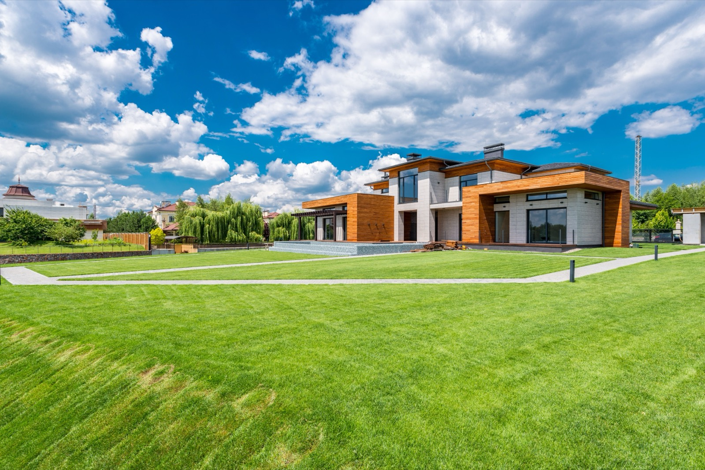

Rammed Earth Homes
Damp earth compacted in forms into monolithic, striped walls that make concrete look ordinary. Stunning and durable, and one of the pricier earthen methods.

Rammed earth takes damp subsoil, sometimes with a little cement, and compacts it in layers inside temporary formwork until it sets into a solid, monolithic wall streaked with beautiful horizontal striations. It's having a genuine 2026 renaissance among architects chasing beauty, thermal performance, and a low-carbon footprint. The catch: it's one of the more expensive earthen methods.
How it's formed
Formwork is erected, moist soil (often stabilized with 5–10% cement for strength and weathering) is poured in ~10–15cm lifts, and each lift is tamped, traditionally by hand, now often pneumatically, until firm. The forms move up as the wall rises. The result is a dense, load-bearing wall with enormous thermal mass and a striking layered finish that needs no paint or cladding.
Cost in practice
Rammed earth is labor- and skill-intensive, and the formwork isn't cheap, so it typically runs $$$, comparable to or above quality conventional construction (roughly $150–350/m² for walls, region-dependent). The soil is cheap; the craft is not. (Approximate.)
Upsides and downsides
| Factor | Rating | Notes |
|---|---|---|
| Cost | 🔴 | Labor + formwork + expertise = premium |
| Aesthetics | 🟢 | Striking layered walls, no finish needed |
| Heat/climate fit | 🟢 | Massive thermal mass, cool interiors |
| Lifespan | 🟢 | Decades to centuries when detailed well |
| DIY-friendly | 🔴 | Needs a skilled crew + the right soil |
| Moisture/rain | 🟡 | Stabilized + capped it's durable; needs protection |
| Seismic/wind | 🟡 | Engineerable with rebar; heavy |
| Permitting/finance | 🟡 | Better than adobe, can be engineered to code |
What building it takes
This is not a DIY method. Getting rammed earth right depends on the exact soil (clay/sand/gravel balance), the moisture content, the compaction, and formwork that can take real pressure, get any of them wrong and you get crumbling or cracking. You want an experienced contractor. The upside for buildability is that, because it can be cement-stabilized and reinforced, it's easier to permit and engineer than adobe or cob, it behaves enough like concrete for a structural engineer to sign off. In the tropics its thermal mass is a real asset; you just cap the walls and detail the base to keep driving rain out.
Thinking about building in Panama or Costa Rica?
SORA is a fixed-price design-build platform for foreign buyers. We build in reinforced concrete by default, and we can talk you through when an alternative method actually makes sense for the tropics. Play with cost live in the 3D configurator.
See real 2026 build costs →Frequently asked questions
Why is rammed earth so expensive if the material is just dirt?
Because the cost is in the labor, skill, and formwork, not the soil. Building the forms, sourcing/mixing the right soil, and compacting it in layers is slow, specialized work, which pushes rammed earth toward (or above) the price of quality conventional construction.
Is rammed earth good for hot climates?
Yes, its high thermal mass absorbs heat during the day and releases it at night, keeping interiors cooler and more stable with less air conditioning, which is a strong advantage in hot climates.
Does rammed earth hold up to rain and earthquakes?
Cement-stabilized, properly capped, and reinforced rammed earth is durable and can be engineered for seismic zones. Unprotected or poorly detailed walls are vulnerable to driving rain at the base, so overhangs and a moisture-proof plinth matter.
Sources & verification
Figures in this guide were checked against primary and authoritative sources on 27 July 2026. Immigration, tax, and cost figures change — always confirm the current rules with the official body or a licensed professional before acting.
- Yanko Design — rammed earth homes 2026
- thedesignfiles — rammed earth pros and cons